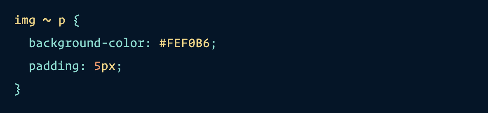

Een general sibling combinator (~) kan er als volgt uitzien in CSS;
Vanwege de bovenstaande declaration worden alle paragraphs geselecteerd die na image tag (bovenstaande img) volgen en geeft de properties; background-color met value #FEF0B6 en padding met value 5 px mee
Ook deze paragraaf krijgt dezelfde achtergrondkleur en padding mee!
En deze ook!
Terug naar Opdracht 6